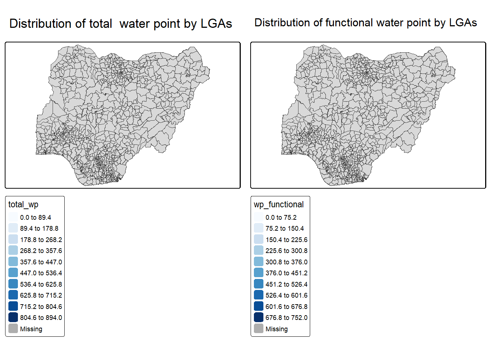

Hands-on Exercise 08c: Analytical Mapping
1 Overview
In this exercise, we will use appropriate functions of tmap and tidyverse to perform the following tasks:
- Import geospatial data in rds format into R environment.
- Create cartographic quality choropleth maps by using appropriate tmap functions.
- Create rate map
- Create percentile map
- Create boxmap
2 Getting Started
In this exercise, we will be using the NGA_wp.rds data and the following packages: sf, tmap and tidyverse.
3 Basic Choropleth Mapping
p1 <- tm_shape(NGA_wp) +
tm_fill("wp_functional",
n = 10,
style = "equal",
palette = "Blues") +
tm_borders(lwd = 0.1,
alpha = 1) +
tm_layout(main.title = "Distribution of functional water point by LGAs",
legend.outside = FALSE)
p2 <- tm_shape(NGA_wp) +
tm_fill("total_wp",
n = 10,
style = "equal",
palette = "Blues") +
tm_borders(lwd = 0.1,
alpha = 1) +
tm_layout(main.title = "Distribution of total water point by LGAs",
legend.outside = FALSE)
tmap_arrange(p2, p1, nrow = 1)
4 Choropleth Map for Rates
4.1 Deriving Proportion of Functional Water Points and Non-Functional Water Points
We will tabulate the proportion of functional water points and the proportion of non-functional water points in each LGA. In the following code chunk, mutate() from dplyr package is used to derive two fields, namely pct_functional and pct_nonfunctional.
4.2 Plotting map of rate
5 Extreme Value Maps
Extreme value maps are variations of common choropleth maps where the classification is designed to highlight extreme values at the lower and upper end of the scale, with the goal of identifying outliers. These maps were developed in the spirit of spatializing EDA, i.e., adding spatial features to commonly used approaches in non-spatial EDA (Anselin 1994).
5.1 Percentile Map
The percentile map is a special type of quantile map with six specific categories: 0-1%,1-10%, 10-50%,50-90%,90-99%, and 99-100%. The corresponding breakpoints can be derived by means of the base R quantile command, passing an explicit vector of cumulative probabilities as c(0,.01,.1,.5,.9,.99,1). Note that the begin and endpoint need to be included.
5.1.1 Data Preparation
Step 1: Exclude records with NA by using the code chunk below.
Step 2: Creating customised classification and extracting values
5.1.2 Creating the get.var function
Firstly, we will write an R function as shown below to extract a variable (i.e. wp_nonfunctional) as a vector out of an sf data.frame.
- arguments:
- vname: variable name (as character, in quotes)
- df: name of sf data frame
- returns:
- v: vector with values (without a column name)
5.1.3 Creating the get.var function
we will write an R function as shown below to extract a variable (i.e. wp_nonfunctional) as a vector out of an sf data.frame.
5.1.4 A percentile mapping function
Next, we will write a percentile mapping function by using the code chunk below.
percentmap <- function(vnam, df, legtitle=NA, mtitle="Percentile Map"){
percent <- c(0,.01,.1,.5,.9,.99,1)
var <- get.var(vnam, df)
bperc <- quantile(var, percent)
tm_shape(df) +
tm_polygons() +
tm_shape(df) +
tm_fill(vnam,
title=legtitle,
breaks=bperc,
palette="Blues",
labels=c("< 1%", "1% - 10%", "10% - 50%", "50% - 90%", "90% - 99%", "> 99%")) +
tm_borders() +
tm_layout(main.title = mtitle,
title.position = c("right","bottom"))
}5.1.5 Test drive the percentile mapping function
To run the function, type the code chunk as shown below.
5.2 Box map
In essence, a box map is an augmented quartile map, with an additional lower and upper category. When there are lower outliers, then the starting point for the breaks is the minimum value, and the second break is the lower fence. In contrast, when there are no lower outliers, then the starting point for the breaks will be the lower fence, and the second break is the minimum value (there will be no observations that fall in the interval between the lower fence and the minimum value).

5.2.1 Creating the boxbreaks function
The code chunk below is an R function that creating break points for a box map.
- arguments:
- v: vector with observations
- mult: multiplier for IQR (default 1.5)
- returns:
- bb: vector with 7 break points compute quartile and fences
boxbreaks <- function(v,mult=1.5) {
qv <- unname(quantile(v))
iqr <- qv[4] - qv[2]
upfence <- qv[4] + mult * iqr
lofence <- qv[2] - mult * iqr
# initialize break points vector
bb <- vector(mode="numeric",length=7)
# logic for lower and upper fences
if (lofence < qv[1]) { # no lower outliers
bb[1] <- lofence
bb[2] <- floor(qv[1])
} else {
bb[2] <- lofence
bb[1] <- qv[1]
}
if (upfence > qv[5]) { # no upper outliers
bb[7] <- upfence
bb[6] <- ceiling(qv[5])
} else {
bb[6] <- upfence
bb[7] <- qv[5]
}
bb[3:5] <- qv[2:4]
return(bb)
}5.2.2 Creating the get.var function
The code chunk below is an R function to extract a variable as a vector out of an sf data frame.
- arguments:
- vname: variable name (as character, in quotes)
- df: name of sf data frame
- returns:
- v: vector with values (without a column name)
5.2.3 Test drive the newly created function
Boxmap function
The code chunk below is an R function to create a box map. - arguments: - vnam: variable name (as character, in quotes) - df: simple features polygon layer - legtitle: legend title - mtitle: map title - mult: multiplier for IQR - returns: - a tmap-element (plots a map)
boxmap <- function(vnam, df,
legtitle=NA,
mtitle="Box Map",
mult=1.5){
var <- get.var(vnam,df)
bb <- boxbreaks(var)
tm_shape(df) +
tm_polygons() +
tm_shape(df) +
tm_fill(vnam,title=legtitle,
breaks=bb,
palette="Blues",
labels = c("lower outlier",
"< 25%",
"25% - 50%",
"50% - 75%",
"> 75%",
"upper outlier")) +
tm_borders() +
tm_layout(main.title = mtitle,
title.position = c("left",
"top"))
}